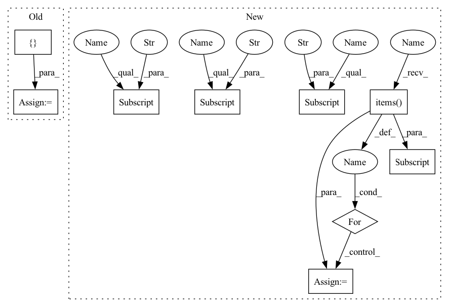

Pattern ID :15832
Before Change
out = self._model(data, mask)
loss_bbox, loss_giou, loss_cls = self._criterion(out, targets)
loss = sum(
[
loss_bbox * self._train_config["loss_coefs"]["bbox_loss_coef"],
loss_giou * self._train_config["loss_coefs"]["giou_loss_coef"],
loss_cls * self._train_config["loss_coefs"]["cls_loss_coef"] += loss.item()
loss_bbox_agg += loss_bbox.item()
loss_giou_agg += loss_giou.item()
loss_cls_agg += loss_cls.item()After Change
// Create absolute loss and mult with loss coefficient
loss_abs = 0
for loss_key, loss_val in loss_dict.items():
loss_abs += loss_val * self._loss_coefs[loss_key.split("_")[0]]
// Evaluate validation predictions based on metric
pred_boxes, pred_classes, pred_scores = inference(out)
self._evaluator.add(
pred_boxes=pred_boxes,
pred_classes=pred_classes,
pred_scores=pred_scores,
gt_boxes=[target["boxes"].detach().cpu().numpy() for target in targets],
gt_classes=[target["labels"].detach().cpu().numpy() for target in targets]
)
loss_agg += loss_abs.item()
loss_bbox_agg += loss_dict["bbox"] .item()
loss_giou_agg += loss_dict["giou"] .item()
loss_cls_agg += loss_dict["cls"] .item()
loss = loss_agg / len(self._val_loader)
loss_bbox = loss_bbox_agg / len(self._val_loader)In pattern: SUPERPATTERN
Frequency: 3
Non-data size: 9
Instances Fragment ID: 53608530
Project Name: bwittmann/transoar
Commit Name: b168360cfaa2ea2a6bf4d82849fc82381329de4a
Time: 2021-12-02
Author: bastian.wittmann@tum.de
File Name: transoar/trainer.py
M Class Name: Trainer
N Class Name: Trainer
M Method Name: _validate(2)
N Method Name: _validate(2)
M Parent Class:
N Parent Class:
M File Name: transoar/trainer.py
N File Name: transoar/trainer.py
M Start Line: 102
M End Line: 142
N Start Line: 103
N End Line: 141
Before Change
out = self._model(data, mask)
loss_bbox, loss_giou, loss_cls = self._criterion(out, targets)
loss = sum(
[
loss_bbox * self._train_config["loss_coefs"]["bbox_loss_coef"],
loss_giou * self._train_config["loss_coefs"]["giou_loss_coef"],
loss_cls * self._train_config["loss_coefs"]["cls_loss_coef"] += loss.item()
loss_bbox_agg += loss_bbox.item()
loss_giou_agg += loss_giou.item()
loss_cls_agg += loss_cls.item()After Change
// Make prediction
out = self._model(data, mask)
loss_dict = self._criterion(out, targets)
// Create absolute loss and mult with loss coefficient
loss_abs = 0
for loss_key, loss_val in loss_dict.items():
loss_abs += loss_val * self._loss_coefs[loss_key.split("_")[0]]
// Evaluate validation predictions based on metric
pred_boxes, pred_classes, pred_scores = inference(out)
self._evaluator.add(
pred_boxes=pred_boxes,
pred_classes=pred_classes,
pred_scores=pred_scores,
gt_boxes=[target["boxes"].detach().cpu().numpy() for target in targets],
gt_classes=[target["labels"].detach().cpu().numpy() for target in targets]
)
loss_agg += loss_abs.item()
loss_bbox_agg += loss_dict["bbox"] .item()
loss_giou_agg += loss_dict["giou"] .item()
loss_cls_agg += loss_dict["cls"] .item()
loss = loss_agg / len(self._val_loader)
loss_bbox = loss_bbox_agg / len(self._val_loader) Fragment ID: 53608531
Project Name: bwittmann/transoar
Commit Name: b168360cfaa2ea2a6bf4d82849fc82381329de4a
Time: 2021-12-02
Author: bastian.wittmann@tum.de
File Name: transoar/trainer.py
M Class Name: Trainer
N Class Name: Trainer
M Method Name: _validate(2)
N Method Name: _validate(2)
M Parent Class:
N Parent Class:
M File Name: transoar/trainer.py
N File Name: transoar/trainer.py
M Start Line: 102
M End Line: 142
N Start Line: 103
N End Line: 141
Before Change
out = self._model(data, mask)
loss_bbox, loss_giou, loss_cls = self._criterion(out, targets)
loss = sum(
[
loss_bbox * self._train_config["loss_coefs"]["bbox_loss_coef"],
loss_giou * self._train_config["loss_coefs"]["giou_loss_coef"],
loss_cls * self._train_config["loss_coefs"]["cls_loss_coef"] += loss.item()
loss_bbox_agg += loss_bbox.item()
loss_giou_agg += loss_giou.item()
loss_cls_agg += loss_cls.item()After Change
// Make prediction
out = self._model(data, mask)
loss_dict = self._criterion(out, targets)
// Create absolute loss and mult with loss coefficient
loss_abs = 0
for loss_key, loss_val in loss_dict.items():
loss_abs += loss_val * self._loss_coefs[loss_key.split("_")[0]]
self._optimizer.zero_grad()
loss_abs.backward()
// Clip grads to counter exploding grads
max_norm = self._train_config["clip_max_norm"]
if max_norm > 0:
torch.nn.utils.clip_grad_norm_(self._model.parameters(), max_norm)
self._optimizer.step()
loss_agg += loss_abs.item()
loss_bbox_agg += loss_dict["bbox"] .item()
loss_giou_agg += loss_dict["giou"] .item()
loss_cls_agg += loss_dict["cls"] .item()
loss = loss_agg / len(self._train_loader)
loss_bbox = loss_bbox_agg / len(self._train_loader) Fragment ID: 53608534
Project Name: bwittmann/transoar
Commit Name: b168360cfaa2ea2a6bf4d82849fc82381329de4a
Time: 2021-12-02
Author: bastian.wittmann@tum.de
File Name: transoar/trainer.py
M Class Name: Trainer
N Class Name: Trainer
M Method Name: _train_one_epoch(2)
N Method Name: _train_one_epoch(2)
M Parent Class:
N Parent Class:
M File Name: transoar/trainer.py
N File Name: transoar/trainer.py
M Start Line: 42
M End Line: 82
N Start Line: 45
N End Line: 83
Before Change
if not self._log or (batch_idx + 1) % self._log_every_n_steps != 0:
return
named_tensor: List = []
tensor, _gt, _ = batch // tensor, label, batch_size
if isinstance(outputs, Dict):
pred = outputs["pred"]
elif isinstance(outputs, Tensor):After Change
// log every n steps
if not self._log or (batch_idx + 1) % self._log_every_n_steps != 0:
return
compressed_batch : Dict[str, List] = {"images": [], "ground_truths": [], "predictions": []}
tensor, gt, _ = batch // tensor, label, batch_size
// output must be Tensor or Dict ơf Tensor
if isinstance(outputs, Dict):
pred = outputs["pred"]
elif isinstance(outputs, Tensor):
pred = outputs
else:
raise Exception(f"Except `outputs` to be List or Dict, get {type(outputs)}")
for idx, image in enumerate(tensor):
transformed_image = transforms.ToPILImage()(image).convert("RGB") // WxH dimension
compressed_batch["images"] .append(transformed_image) // batch_size x W x H dimension
compressed_batch["ground_truths"] .append(gt[idx].item())
compressed_batch["predictions"] .append(pred[idx].item())
if self._on_epoch:
for key, value in compressed_batch.items():
self._epoch[key] += value // epoch: number_of_data x W x H dimension
if self._on_step:
self.add_image(tag="Train/step_media", media=compressed_batch)
Fragment ID: 53608538
Project Name: uetailab/uetai
Commit Name: ac795b0b1d6529a8ef130965ee4028565aa6620e
Time: 2021-09-30
Author: manhdung20112000@gmail.com
File Name: src/uetai/callbacks/image_monitor.py
M Class Name: ImageMonitorBase
N Class Name: ImageMonitorBase
M Method Name: on_train_batch_end(7)
N Method Name: on_train_batch_end(7)
M Parent Class: Callback
N Parent Class: Callback
M File Name: src/uetai/callbacks/image_monitor.py
N File Name: src/uetai/callbacks/image_monitor.py
M Start Line: 48
M End Line: 68
N Start Line: 67
N End Line: 88